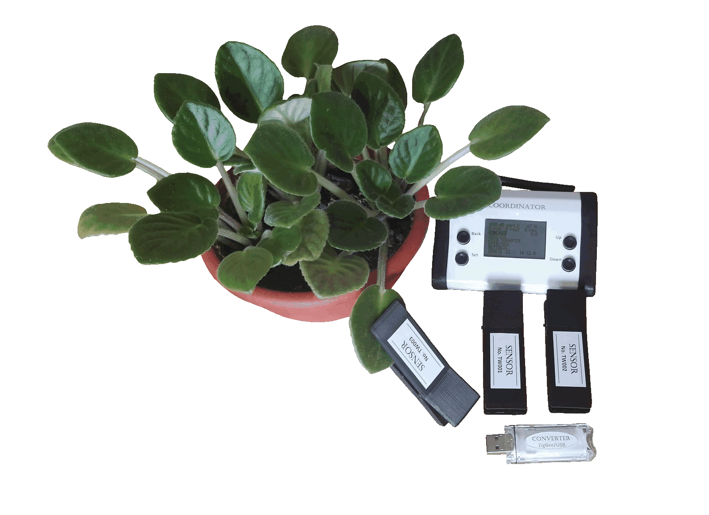

Wireless Sensor Network for Agriculture

In agriculture, ecological monitoring and medicine it is very important to obtain data of the real-time
influence of stress factors of natural or anthropogenic origin on the state of biological objects (e.g.
plants, humans etc.). For this purposes special means are used in modern industrial agriculture,
environmental monitoring, medicine and military applications. The applications of modern achievements in
microelectronics, biosensors, and communications and information technologies make it possible to solve
this rather complicated problem of real-time monitoring of state of lots of biological objects. The most
perspective technology for realization of data acquisition and processing systems is wireless sensor
network.
A node of wireless sensor network – remote smart wireless biosensors with embedded sensors and radio
transceiver for express estimation of plant state for precision farming. Node features: long-term
autonomous work, reliability of data sending and receiving, a large communication range, small size and
weight, stability to climate influence.
Organization of data acquisition of state of biological objects is performed via self-organization of
wireless nodes with different sets of sensing units in wireless sensor network, which can covers a large
territory.
Data acquisition can be performed by mobile unmanned platform, namely multicopter. In this mode, the mobile
unmanned platform is equipped with flash-memory with wireless communication unit.
Implementation of proposed wireless sensor network into industrial agriculture, ecological monitoring and
medicine makes it possible to increase efficiency and quality of agricultural products, spare fertilizers,
water and energy resources, timely protect agricultural plants, woodlands and parklands from infections and
anthropogenic impacts, obtain real-time information about human state including estimating physiological
parameters of human in extreme conditions.
Main developer:
Volodymyr ROMANOV